Dokumentation: The Duckventure
1. Einleitung
Dieses Tutorial bezieht sich auf die Erstellung eines 2D Jump'n'Runs. Für die Erstellung wird das Framework MonoGame in C# verwendet. Das Tutorial zur Installation von MonoGame unter Windows und Linux lässt sich auf unserer GitHub-Seite finden.
2. Idee und Konzept
"The Duckventure" ist ein 2D Jump'n'Run, welches innerhalb des Informatikunterrichts entstanden ist. Es handelt davon, dass eine kleine Ente sich durch eine begrenzte Map mithilfe der Steuerung WASD bewegten lässt. Die Gegenbeiten sind den wirklichen Gegebenheiten weitesgehend angepasst. Es gibt eine vorherschende Schwerkraft, welche die Ente wieder auf den Boden drückt und ebenfalls einen Gegner der Ente, welcher versucht die Ente zu bekommen.
Das Spiel ist noch nicht ganz fertiggestellt. Das bedeutet, dass noch einige Bugs zu finden sind und auch einige Dinge erst angedeutet, aber noch nicht vollständig implementiert worden sind. Hierzu jedoch weiteres im Abschnitt "Fehlende Aspekte im Code"
3. Das Spiel
Das Spiel "The Duckventure" besteht aus drei verschiedenen mehr oder wenig großen Teilen: dem Startbildschirm, dem Steuerungstutorial und dem interaktivem Spiel.
3.1 Der Startbildschirm
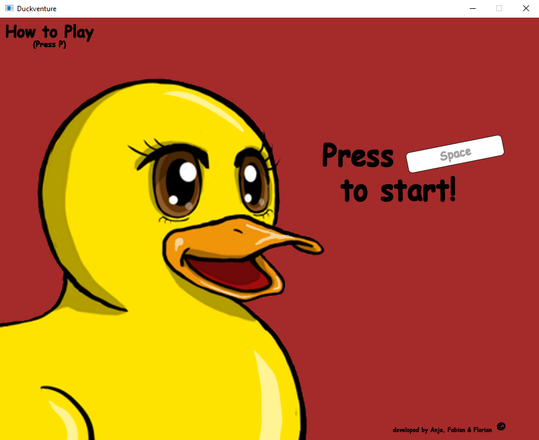
Der Startbildschirm ist das erste Fenster, welcher der Spieler auf dem Bildschirm sieht, sobald er das Spiel startet. In diesem bewegt sich die Ente innerhalb der ersten drei Sekunden von links in das Fenster hinein und bleibt schließlich stehen. Es sind die Möglichkeiten zum Weiterspielen (Press Space) und zum Steuerungstutorial (Press P) zu sehen. Auch die Ersteller des Spiels werden auf dem Startbildschirm unten rechts angezeigt.
3.2 Das Steuerungstutorial
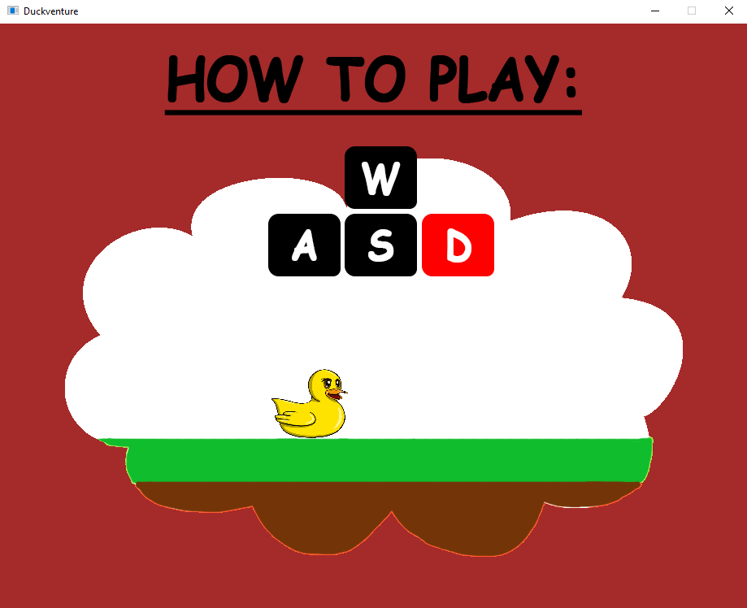
Das Steuerungstutorial wird aus dem Startbildschirm mithilfe des Klicks auf den Key P erreicht. In diesem wird durch eine 10-sekündige Animation dem Spieler erklärt, wie die Steuerung (WASD) im interaktivem Spiel funktioniert. Das Tutorial kann nicht übersprungen werden, sondern muss vollständig angesehen werden. Es kann allerdings im Startbildschirm wiederholt werden.
3.3 Das interaktive Spiel
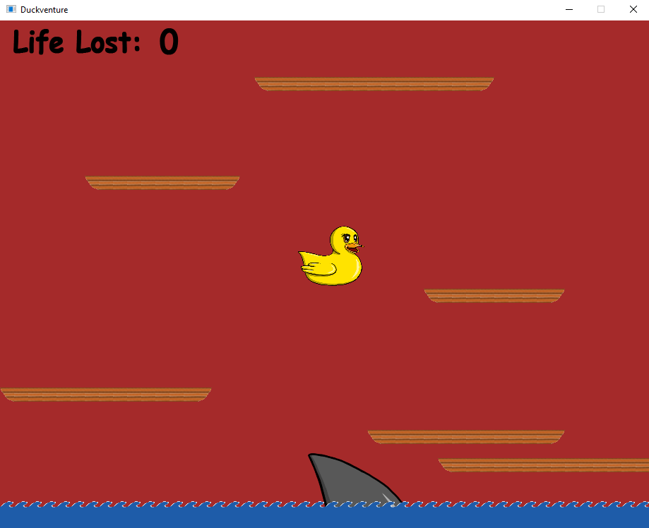
Das interaktive Spiel bietet alle Features die im Tutorial erklärt worden sind. Die Ente kann sich durch die Steuerung WASD auf den Plattformen bewegen lassen. Sobald die Ente jedoch vollständig im Wasser versinkt, erhöht sich der LifeLostCounter um eine Zahl, es werden die Tode gezählt. Im unteren Bereich des Bildschirm bewegt sich eine Haiflosse und nach einer gewissen Zeit springt ein Hai aus dem Wasser und versucht die Ente zu erwischen.
4. Aufbau und Funktion von Duckventure
Beim Erstellen eines MonoGame-Projekts ist die Grundlage für das Erstellen und Gestalten eines Spiels durch das Framework XNA in C# bereits gegeben. XNA erstellt ein Projekt, welches sich als interaktives Koordinatensystem, in welchem man Objekte berechnen und zeichnen kann, beschreiben lässt.
Die Game1.cs ist die wichtigste Datei bei der Erstellung eines Spiels. In der Datei werden Objekte erstellt, bewegt und gezeichnet. Dafür stellt es einem mehrere Funktionsabschnitte:
- LoadContent
- Update
- Draw
Hier werden Objekte wie Bilder oder die Level-Map in das Projekt geladen.
Beispiel: Um die Ente als Bild im späteren Code verwenden zu können, muss dieses Bild zuerst in diesem Abschnitt korrekt geladen werden. Zu beachten ist, dass das Bild hierfür im Order .../Content/Textures/ gespeichert werden muss.
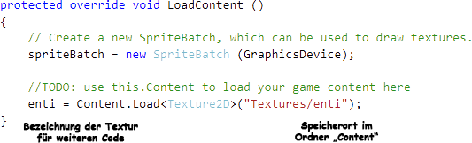
Hier finden die Berechnungen der Positionen und Handlungen der Objekte statt. Dieser Abschnitt ist für das Projekt der Wichtigste, da in diesem alles in einer Schlaufe berechnet und ausgelesen wird.
Beispiel: Die Ente, welche im LoadContent-Abschnitt implementiert wurde, kann hier eine Position und eine zeitgesteuerte Bewegung zugeordnet werden.
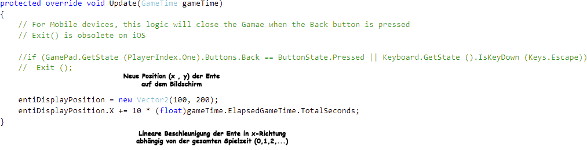
Hier werden Objekte auf die Bildfläche gezeichnet, dabei werden die Berechnungen aus Update angewendet.
Beispiel: Auf dem Bildschirm wird nach dem Ausführen des Spiels von der Ente nicht zu sehen sein. Die Ente muss also im Draw-Abschnitt des Codes implementiert werden, damit sie auf dem Bildschirm sichtbar ist.
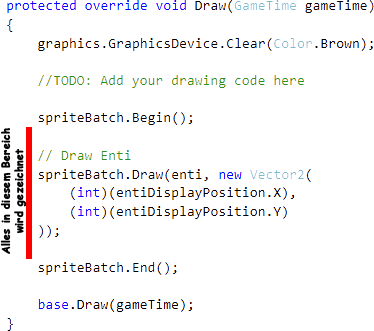
5. Einzelne Mechaniken anhand von Code-Ausschnitten
Im Folgenden werden Bestandteile des Codes erklärt, welche für die Erstellung des Projekts "Duckventure" von hoher Bedeutung sind.
5.1 Schwerkraft
5.2 Bewegung der Ente
5.3 Sprung (bzw. Doppelsprung)
5.4 Die Gegner
Damit das Spiel nicht an Spannung verliert, braucht es eine Art Gegner für die Ente. Bei Duckventure nimmt ein Hai die Rolle des Gegners ein. Dieser Haiflosse des Hais schwimmt mit einer bestimmten Geschwindigkeit um die x-Koordinate der Ente herum. Er lässt sich wie die Ente in das Projekt am Punkt (x , y) im Abschnitt "Draw" zeichnen. Die Haiflosse erhält, solange die x-Koordinate kleiner als die x-Koordinate der Ente ist eine positive Beschleunigung (1) und sobald sie größer als die x-Koordinate der Ente ist eine negative Beschleunigung (2), sodass die Flosse immer in Bewegung ist und niemals komplett zum Stehen kommt.
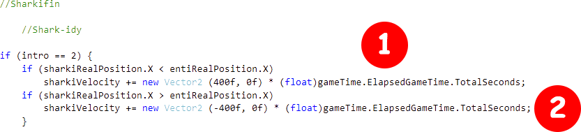
(Codeauszug: Zeilen 407-416 aus Game1.cs)
Nach jeweils acht Sekunden springt aus der momentanen x-Koordinate der Ente ein Hai und die Haiflosse verschwindet vorerst. Dieser Prozess geschieht so, weil ein Timer (sharkTimer) von 0 bis 8 hochzählt und, sobald die 8 erreicht wurde, die nächste Aktion ausführt. Diese Aktion besteht daraus, dass die Haiflosse nicht mehr gezeichnet wird, der Hai mit einer bestimmten Beschleunigung in -y-Richtung springt und an einem bestimmtem Punkt (Hälfte der Bildschirmhöhe) eine positive Beschleunigung erlangt, sodass er wieder zum Boden hin fällt. Beim Erreichen vom Ende des Bildschirms verschwindet der Hai wieder und die Haiflosse wird anschließend wieder mit ihren alten Bewegungen gezeichnet. Das Zählen mit dem Timer beginnt von vorne, es entsteht eine Dauerschleife der beschriebenen Vorgänge.
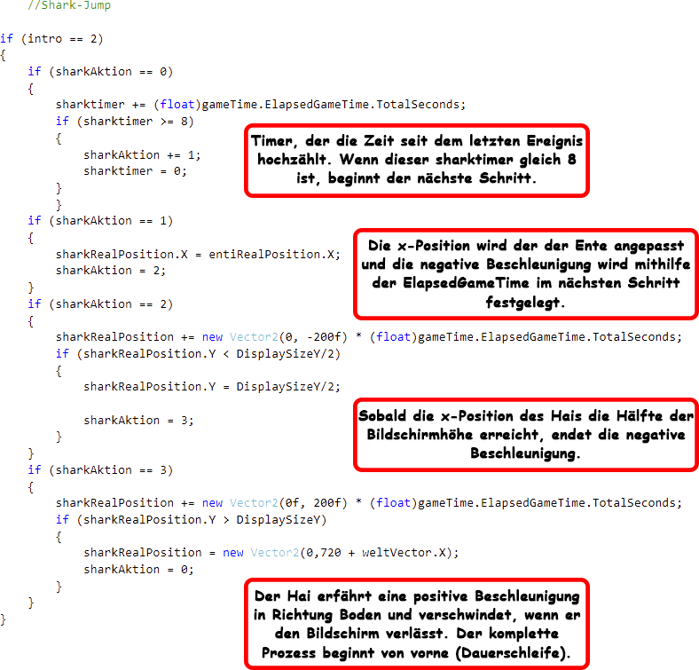
(Codeauszug: Zeilen 425-462 aus Game1.cs)
5.5 Die Map
Die Map bietet die Möglichkeit den Bildschirm in kleine Zellen zu unterteilen und diesen bestimmten Eigenschaften zuzuweisen. Die Breite und Höhe der Map (zu beachten: MAPWIDTH * CellSizeX = DisplaySize.X, damit der komplette Bildschirm gefüllt wird) muss zuerst festgelegt werden.
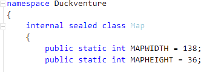
(Codeauszug: Zeilen 8-13 aus Map.cs)
Die Eigenschaften der Zellen werden in einer weiteren Datei festgelegt. Diese Datei besteht aus Symbolen oder Zahlen der jeweiligen Anzahl der Höhe und Breite der Map. Um Plattformen oder andere Objekte einzubauen, muss ein anderen Symbol in die Map implementiert werden (Bsp.: Wahl der Eigenschaft Luft: * und Eigenschaft Plattform: #).
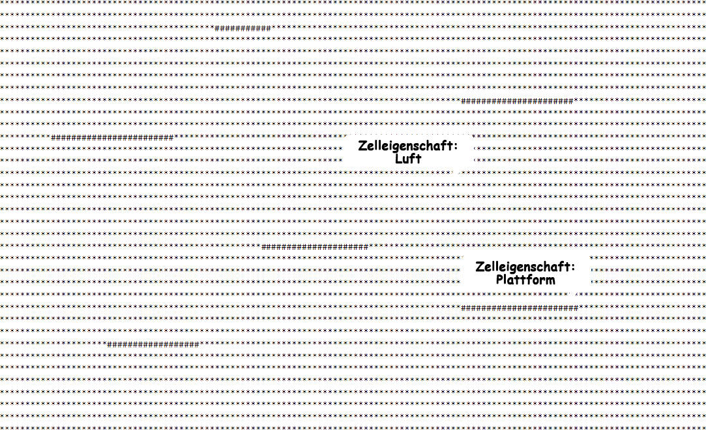
(Codeauszug: Ähnlich zu den Zeilen 1-36 aus Map)
Die Symbole * und # müssen nun in der Map.cs als Luft und Plattform definiert werden. Dazu wird die Datei Map mithilfe eines Strings ausgelesen und sobald das Symbol * bzw. # gefunden wird, wird diesem die nachstehende Eigenschaft zugewiesen. Wenn kein Symbol gefunden wird, wird dieser Zelle auch keine Eigenschaft zugewiesen.
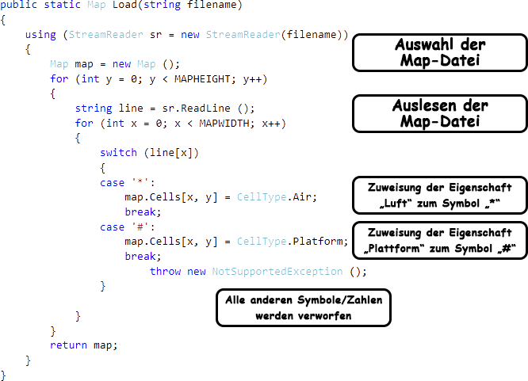
(Codeauszug: Ähnlich zu den Zeilen 21-58 aus Map.cs)
Die Zellen mit den jeweiligen Eigenschaften werden im Draw-Bereich der Game1.cs so gezeichnet, dass die Auslesung aus dem letzten Schritt hervorgerufen wird und sobald das Symbol einer Plattform gefunden wurde, die Zelltextur der Plattform mit der Breite und Höhe der Zelle gezeichnet wird. Zu beachten: Die Pixelbreite bzw. -höhe der Textur im Content-Ordner sollte im Idealfall der Zellbreite bzw. -höhe exakt entsprechen.
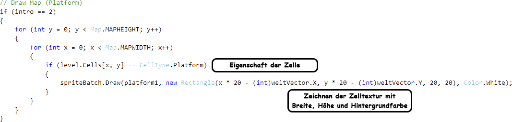
(Codeauszug: Ähnlich zu den Zeilen 697-725 aus Game1.cs)
5.6 Kollision zwischen zwei Objekten
Die Plattformen wurden mithilfe der Map gezeichnet. Allerdings fehlt zu diesem Zeitpunkt noch die Interaktion zwischen der Ente und der Plattform. Die Ente kann nicht auf der Plattform stehen.
Die Kollision der Ente entsteht so, dass der Ente eine Hitbox zugewiesen wird. Diese Hitbox liegt am untersten mittleren Punkt der Ente.
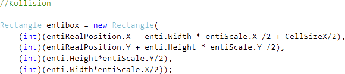
(Codeauszug: Zeilen 490-494 aus Game1.cs)
Der Plattform-Zelle wird ebenfalls eine Hitbox zugewiesen. Diese Hitbox liegt am obersten mittleren Punkt der Zelle. Sobald eine Überschneidung der Hitbox der Ente und der der Plattform-Zelle erreicht wird, erfährt die Ente keine Bewegung mehr in y-Richtung. Die Position der Ente wird so angepasst, dass die Ente bei jeder Plattform-Zelle auf der Zelle laufen und springen kann.
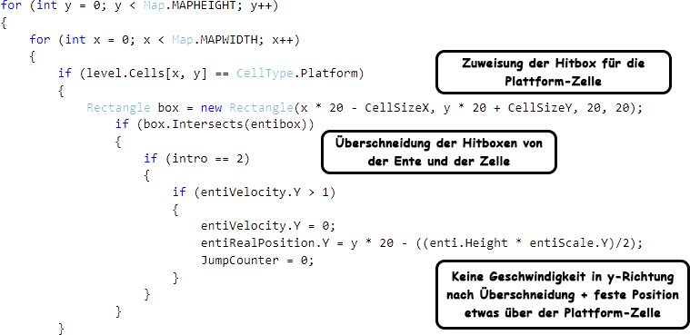
(Codeauszug: Ähnlich zu den Zeilen 512-531 aus Game1.cs)
5.7 Der Todescounter
Der Todescounter zählt die Tode der Ente. Hierfür muss ein Bereich angegeben werden, in welchem die Ente als tot gilt. Bei unserem Projekt ist dieser Bereich unterhalb des Bildschirm (also y >= DisplaySizeY + enti.Height * entiScale.Y). Wird der Bereich von der Ente erreicht, wird der Todescounter um eine Zahl erhöht und die Position der Ente wird auf die Startposition gesetzt.

(Codeauszug: Zeilen 388-392 aus Game1.cs)
Die Zahl des erhöhten Todescounters wird im Draw-Bereich im Bildschirm sichtbar gezeichnet. Hierbei bezieht sich die Ausgabe der Zahl auf den Wert des Todescounter (Bsp.: Todescounter = 3: Die Zahl 3 wird vom Program gezeichnet.)
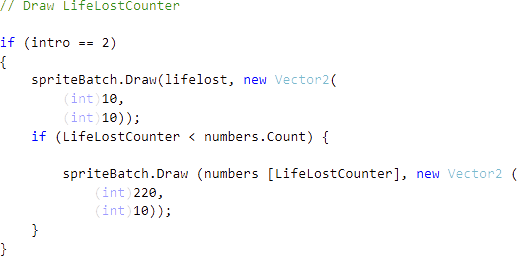
(Codeauszug: Zeilen 649-662 aus Game1.cs)
6. Fehlende Aspekte im Code
Fehlende Code-Abschnitte sind zum Beispiel die Überprüfung, ob der aus dem Wasser springende Hai die Ente trifft oder nicht. Bei dieser Überprüfung sollte die Ente anschließend an den Anfangspunkt gesetzt werden und der Todescounter um eine Zahl steigen.
Der Todescounter kann zum Stand der Abgabe des Projektes nur bis zur Zahl 9 zählen und zeigt ab der nächsten Zahl nichts mehr an. Für dieses Problem sollten weitere Zahlen vorhanden sein oder ein allgemeiner Todesbildschirm eingeblendet werden (max. 9 Leben).
In der Map fehlt ein Ziel, damit der Spieler das Level oder das Spiel erfolgreich beenden kann. Es könnte am Ende der Map eine Flagge sein, wo der Spieler durch Berühren zum Startbildschirm gelangt und das Spiel erneut starten kann. Eine weitere Idee wäre, dass der Spieler auf der Map einzelne Münzen oder Gegenstände finden kann und bei einer bestimmten Anzahl an Gegenständen das Spiel erfolgreich geschafft hat.